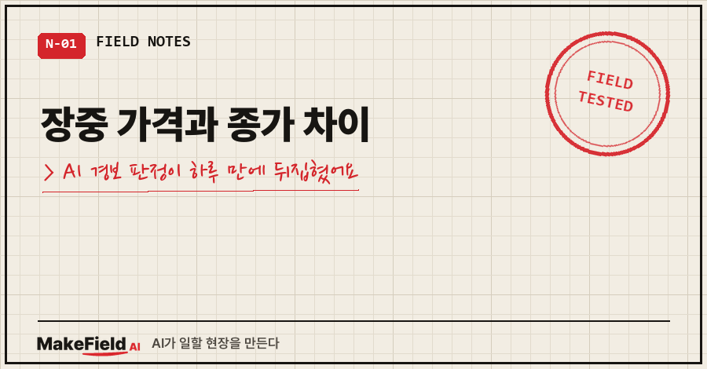
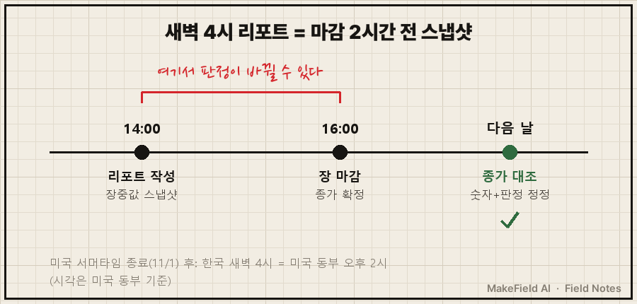
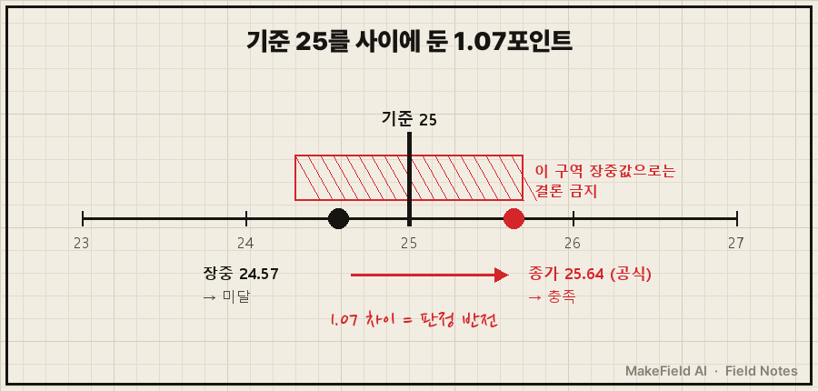
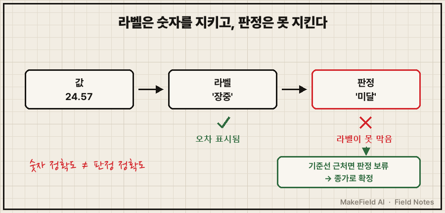

11월 7일 새벽 리포트엔 이렇게 적혀 있었어요.
11/6 장중 조건 미발생 (종가 11/8 확인)다음 날 새벽 리포트는 이랬고요.
VIX 장중 24.57(기준 미달) → 종가 25.64(기준 충족)
장중값이 판정을 뒤집은 첫 사례장중 가격과 종가 차이는 보통 '숫자를 조금 고치는 일'로 끝나지만, 그 숫자가 기준선 바로 옆에 있으면 예/아니오 판정 자체가 뒤집힙니다. 이번엔 기준 25를 사이에 두고 장중 24.57, 종가 25.64였어요. 차이는 1.07포인트였는데, 그 사이에 판정이 있었습니다.
자동화·데이터 일을 15년째 해 온 현장 엔지니어라 측정값을 기준선에 대 보는 일엔 익숙한 편인데요, 이번엔 그 습관을 AI 리포트에 안 옮겨 놨다가 걸렸어요. 개인 투자 공부용으로 AI가 매일 새벽에 써 주는 리포트에서 생긴 일이고, 투자 권유와는 상관없는 '자동 판정' 이야기입니다.
1. 장중 가격과 종가는 왜 차이가 날까요?
장중 가격은 장이 열려 있는 동안 계속 바뀌는 중간값이고, 종가는 장이 끝난 뒤 하루치로 확정되는 마지막 값이에요. 같은 날이라도 마감 직전 몇 시간에 크게 움직이면 둘은 꽤 벌어집니다.
제 리포트는 한국 시간 새벽 4시에 자동으로 써져요.
미국 서머타임이 11월 1일에 끝나면서, 새벽 4시는 미국 동부 오후 2시가 됐어요. 마감 2시간 전이죠.
그래서 리포트에 실리는 미국 값은 전부 장중값이고, AI는 거기에 '장중' 라벨을 붙인 다음, 다음 날 종가와 대조해서 틀린 건 전부 정정 보고하게 해 뒀어요.

그 2시간이 얼마나 큰지는 정정 기록이 보여 줘요. 11월 첫 주 리포트가 실은 장중값 9건 중에서 매일 8~9건이 다음 날 정정됐습니다.
| 리포트 날짜 | 정정 건수 | 지수 쪽 방향 |
|---|---|---|
| 11/3 | 9건 중 9건 | 6건 모두 실제가 더 나쁨 |
| 11/4 | 9건 중 8건 | 6건 모두 실제가 더 나쁨 |
| 11/5 | 9건 중 8건 | 3건 더 나쁨, 3건 더 좋음 |
| 11/6 | 9건 중 9건 | 6건 모두 실제가 더 나쁨 |
| 11/7 | 9건 중 9건 | 6건 모두 실제가 더 나쁨 |
방향도 일정하지 않았어요. 그래서 "장중값에 얼마를 더하면 종가"라는 식의 보정은 처음부터 못 씁니다.
2. 8월엔 숫자만 고치면 끝났어요
예전 글 AI가 알려준 주가가 실제와 다를 때에서 기준 시각 라벨을 붙인 얘기를 했는데, 그 글 끝에 이렇게 적었어요. "그래도 판정은 안 바뀌었고요."
그때까진 정말 그랬어요. 숫자가 틀려도 기준선에서 멀었으니까요.
10월 31일 리포트가 처음으로 아슬아슬했습니다.
장중 나스닥 하루 낙폭이 -3.61%. 제 경보 조건 중 하나가 "나스닥 하루 -4% 이상"이라 0.39%p 앞이었어요.
그런데 마지막 1시간에 회복하면서 종가는 -2.86%로 끝났어요.
이땐 안전한 쪽으로 빗나가서 아무 문제가 안 드러났죠.
'장중' 라벨도 붙였고 정정도 했으니 됐다고 저도 생각했어요..
3. 11월 7일, 라벨을 붙였는데도 판정이 뒤집혔습니다
제 경보에는 빨간불을 끄는 규칙이 있어요. 위험 조건이 5거래일 연속 하나도 안 나오면 한 단계 내린다. 조건 중 하나가 "공포지수(VIX) 종가 25 이상"이고요.
11월 7일 리포트가 본 전날 장중 공포지수는 24.57이었어요. 기준 미달이니 '조건 미발생'.
다음 날 대조한 공식 종가는 25.64. 기준 충족이었습니다.

다행히 두 가지 덕에 실제 피해는 없었어요.
하나, 리포트가 장중 판정을 '잠정'으로만 적고 확정은 다음 날로 미뤄 두게 돼 있었어요. 위 첫 번째 코드블록의 "(종가 11/8 확인)"이 그 장치예요.
둘, 그 시점 해제 카운트가 이미 0이라 하루 판정이 틀려도 빨간불이 꺼질 일은 없었습니다.
그래도 이건 운이에요. 카운트가 4까지 차 있던 날 같은 일이 났다면, 잠정 판정 하나로 경보가 꺼질 뻔한 거니까요.
4. 숫자 정확도와 판정 정확도는 다른 문제였어요
'장중' 라벨은 숫자에 오차가 있다는 걸 알려 줄 뿐, 그 숫자로 내린 예/아니오까지 지켜 주진 않아요. 이번에 제일 크게 배운 게 이거예요.

그래서 리포트 학습 기록에 규칙을 하나 적었어요.
기준선 근처 지표는 장중값으로 결론 금지.같은 날 공포지수 종가는 거래소 공식 파일로, 미국 국채금리는 재무부 공식 파일로 바로 받는 경로도 확보했어요. 결론은 확정값으로만 내리겠다는 거죠.
사실 이건 현장에선 오래된 얘기예요. 측정값으로 합격·불합격을 가를 때 규격 한계 바로 옆의 값은 측정 불확도 때문에 바로 판정하지 않거든요. 국제 표준 ISO 14253-1도 측정값으로 합격·불합격을 증명하는 판정 규칙을 따로 두고, 한계 근처는 불확도를 따져 판정하게 합니다. 흔히 가드밴드라고 부르는 그 구간이요.
측정기엔 늘 하던 걸 AI 리포트엔 안 하고 있었던 겁니다.
5. AI 판정을 자동으로 받는다면 이 4가지만 보세요
| 확인할 것 | 왜 필요한가 |
|---|---|
| 판정에 쓴 값이 확정값인가, 중간값인가 | 중간값이면 판정도 '잠정'이어야 해요 |
| 그 값이 기준선에서 얼마나 떨어져 있나 | 멀면 오차가 있어도 결론이 안 바뀌어요 |
| 잠정 판정이 무언가를 끄거나 켜는가 | 경보 해제처럼 되돌리기 어려운 일은 확정값으로만 |
| 다음 날 판정까지 대조하는가 | 숫자 정정만 하면 뒤집힌 판정을 놓쳐요 |
마지막 줄이 이번에 저를 살린 자리예요. 다음 날 대조에서 숫자만 봤다면 그날 기록은 "9건 정정" 한 줄로 끝났을 거예요. 판정까지 다시 매겼기 때문에 "뒤집혔다"가 기록에 남았습니다.
자주 묻는 질문
Q. 처음부터 종가가 나온 뒤에 리포트를 쓰면 되지 않나요?
리포트는 한국 새벽에 받아 아침에 읽는 용도라 시각은 그대로 뒀어요. 대신 장중값으로 낸 판정은 '잠정'으로만 적고, 확정은 다음 날 종가 대조 뒤로 미루게 돼 있습니다.
Q. 기준선 '근처'는 얼마까지로 잡나요?
아직 숫자로 못 박지 않았어요. 기록에 남긴 규칙은 "기준선 근처면 장중값으로 결론 금지"까지예요. 폭을 숫자로 정하려면 장중과 종가가 얼마나 벌어지는지 더 쌓아 봐야 해서요.
이 글의 숫자는 공개 시장 지표를 제 개인 기록과 대조한 것이고, 매수·매도 판단 근거로 쓰라는 얘기가 아닙니다.
다음엔 이번에 새로 잡은 '확정값 공식 파일' 경로를 어떻게 찾았는지 적어 볼게요.
숫자는 맞는데 결론이 틀리는 자리를 하나씩 메워 가는 기록, makefield.ai에서도 이어서 보실 수 있어요.
출처
- ISO 14253-1:2017, Geometrical product specifications (GPS) — Inspection by measurement of workpieces and measuring equipment — Part 1: Decision rules for verifying conformity or nonconformity with specifications → https://www.iso.org/standard/70137.html
- Cboe, VIX Historical Price Data (공포지수 일별 공식 데이터) → https://www.cboe.com/tradable_products/vix/vix_historical_data/
- NIST, Daylight Saving Time (DST) — 2026년 미국 서머타임 종료 11월 1일 → https://www.nist.gov/pml/time-and-frequency-division/popular-links/daylight-saving-time-dst
태그: #장중종가차이 #장중가격 #종가 #VIX #공포지수 #AI판정오류 #AI경보 #자동화경보기준 #기준선판정 #가드밴드 #판정보류 #AI투자리포트 #AI자동화 #AI오답노트 #MakeFieldAI